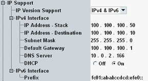

This node defines the required IP version support and configures the internal IP stacks.
The IPv4 and IPv6 sections are only displayed if the support of the corresponding IP version is enabled.
In general, IP connectivity and end-to end data functionality are provided by the data application unit (DAU), see "IP Communication". This section is only relevant, if no DAU is used. |

Defines the required IP version support. For background information, see "IP Communication".
IPv6 is only available in the modes AP, station and Wi-Fi Direct.
Remote command:Configures the internal IPv4 stack and sets the destination address. The address is assigned to the DUT via DHCP (if enabled) and used by the packet generator.
Remote command:Defines the IPv6 prefix of the built-in IPv6 stack.
Remote command: